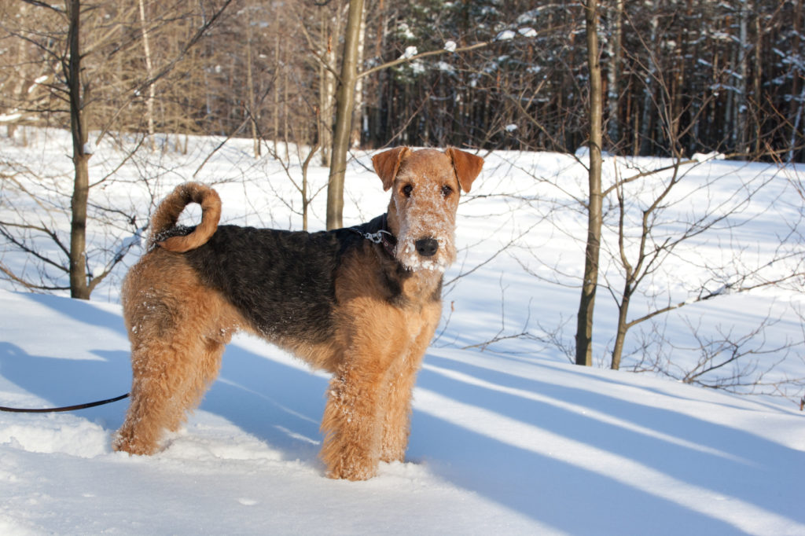

Airedale terrier
Az airedale terrier-t olykor a “terrierek királyaként” emlegetik, s a világ legrégebbi és legsokoldalúbban használt munkakutyáinak egyike. Manapság ez a közepes termetű, összetéveszthetetlen külsejű és barátságos jellemű négylábú kedvelt családi kutya.
Az airedale terrier jelleme
Várakozásteli tartása és élénk pillantása már sugallja: ez a kutya bármilyen kalandra kész! Így azután alig van olyan elfoglaltság, amiben az airedale terrier ne szeretne részt venni. Eleven, tanulékony lénye, kiegyensúlyozottsága és alkalmazkodóképessége igencsak megkönnyíti tartóinak, hogy eleget tegyenek ennek a kívánságnak. Legyen az étterem, kutyasportpálya, nyaralás vagy közös családi kirándulás – az airedale terrier mindig tud viselkedni, s tudja, mit várnak el tőle.
Erős személyiség négy mancson
Ez azonban egyáltalán nem jelenti azt, hogy hagyja magát ledegradálni holmi parancsteljesítő állattá – végül is ő még mindig egy terrier, s mint minden más terrier-fajta, megvan a maga akarata. Ugyan csak ritkán csökönyös, viszont magas szintű intelligenciája, nagy öntudata és rettenthetetlensége feljogosítják arra, hogy „együtt gondolkodjon“, s bizonyos igényeket támasszon. Egész egyszerűen az airedale egy erős személyiség, aki tudja, hogy mit akar. S a prioritás-lista legtetején ott vannak azok a változatos elfoglaltsági- és mozgáslehetőségek, amelyek úgy testileg, mint szellemileg leterhelik. Ez a temperamentumos és tanulékony kutya nem tudja elviselni az unalmat.
Mennyi nevelésre van szüksége egy airedale-nek?
Ezért aztán a konzekvens nevelésnek a dominanciára hajlamos terrier esetében igen nagy szerepe van. A tipikus terrier-tulajdonságok kezelésére a legjobb alap a szeretet, bizalom és megértés. A túlzott keménység vagy erőszak azonban makacs fokozatra kapcsolja az airedale-t, s vélhetően pont az ellenkezőjét teszi annak, amit tulajdonképpen elvártak tőle. Szerencsére azonban ennek a barátságos britnek olyan nyitott és emberbarát természete van, ami gazdájának lehetővé teszi, hogy gyorsan elnyerje a kutya bizalmát. S azután már extrém ragaszkodást mutat családja irányába, s olyan kooperatív partnernek mutatkozik, melyet nagyon könnyű megnyerni néhány játékos nevelési gyakorlatra.
Gyerekekkel és állatokkal való bánásmódja
Kiegyensúlyozott természetének, határozott játékosságának köszönhetően az eredetileg vidravadászatra tenyésztett airedale terrier kitűnő családi kutya, amely nemcsak a gyerekeket szereti, hanem a felnőtteknek is rengeteg örömöt okoz. Így azután egyik-másik airedale terrier még egészen idős korában is igazi bohóc, aki tudja, hogyan kell gazdáit humoros és könnyed módon elbűvölni és lelkesíteni. A gyerekekhez egészen különleges kapcsolat köti, s nemcsak vidám játszópajtás a számukra, hanem megbízhatóan védi is a kicsiket. Azonban - ahogyan bármely más, hasonló formátumú kutyát – ezt a fajtát sem szabad egyedül hagyni kicsi gyerekekkel.
Az airedale más kutyákkal szemben is igen béketűrő magatartást mutat, vagyis esetében semmi akadálya egy „többkutyás“ háztartásnak – amennyiben kellőképpen időben odafigyeltek a kutya szocializációjára. Más kisállatokkal – tengerimalaccal, hörcsöggel és nyúllal, de akár macskákkal - való együttélése esetén azonban figyelembe kell venni a terrierek velük született vadászösztönét.
Az airedale terrier megjelenése
Egyik oldalon energiával teli vállalkozó kedv – másik oldalon figyelemre méltó belső nyugalom: ezek tükröződnek vissza teljes megjelenésében. A szemeiből tükröződő figyelmes pillantás, várakozásteljes tartású fülei, farkának öntudatos, egyenes tartása mind azt mutatja, hogy ez a kutya minden cselekedetre kész - agresszivitás és idegeskedés nélkül. Robusztus, izmos és kompakt testalkata vastag, drótszerű szőrével még hangsúlyossá teszi ezt a képet.
Külső sajátosságai
56-59 cm-es marmagasságával az airedale terrier a legnagyobb (angol) terrierekhez tartozik. A korábban inkább szörnyűségesnek leírt kutyák mára nemes terrierekké váltak, melyek különleges, drótszerű szőrzetükkel, arányos testalkatukkal, nyílt tekintetükkel sok-sok kutyabarát szívét megdobogtatják szerte a világban. Az airedale hosszúkásra nyúlt feje, amely elöl dús szakállba torkollik, valamint dupla, két színű bundája - rajta fekete „nyereggel“ és világos-vöröses-barnás testrészekkel - összetéveszthetetlen és szimpatikus külsőt kölcsönöznek az állatnak.
Dupla szőrkorona
Dús, drótszerű szőrzetét manapság rövidre illik vágni, hogy ne legyen lompos-bozontos hatású. A szőrzet lehet enyhén hullámos vagy loknis, azonban nem szabad túl göndörnek vagy túl puhának lennie. A vastag, rövid és puha aljszőrzettel együtt ez a dupla szőrzet hatásos védelmet nyújt a széltől, víztől és hidegtől. Az airedale - amely sok más kutyafajtával ellentétben nem váltja természetes módon a szőrét – a hőséget nem túl jól viseli.
Az airedale terrier története
Az airedale terrier eredetének helyszínére, az észak-angol Yorkshire grófságra jellemző, inkább rideg klíma természetesen nem okozott különösebb gondot ennek a hőségre érzékeny kutyafajtának. A parasztok, vadászok, hegyekben élő emberek és gyári munkások kutyájaként az időjárás viszontagságaival szemben ellenálló és robusztus szőrzetre volt szüksége, amely lehetővé tette számára, hogy a neki szánt, sokoldalú feladatokat megbízhatóan elvégezze. „Working“ vagy „waterside terrier“ mivoltában nemcsak a vidrákra és fajdtyúkokra való vízi vadászatokon vett részt, hanem fácánok és borzok megfogásában is segített. De használták csordahajtásra és patkányvadászatra, s őrző-védő funkcióban is sikerrel foglalkoztatták ezt a sokoldalú kutyát.
A fajta kezdetei
A fajta a XIX. század közepén fejlődött ki, vélhetően más angol terrierek és nagyobb vidravadász kopók kereszteződése által. Emellett úgy feltételezik, hogy a gordon szetter és a skót juhászkutya is szerepet játszott a fajta létrejöttében, melynek nevében az airdale a a yorkshire-i Aire folyó nevéből és az angol „dale“ (völgy) szóból tevődik össze. Robusztus alkata, jellegzetes megbízhatósága és különösképp figyelemreméltó sokoldalúsága mint munka- és szolgálati kutya számos barátot és támogatót szerzett az első keresztezési kísérletek utódainak.
Munka-, mentő- és kísérőkutya
Elsőként egy 1880-as kutyakiállításon került említésre az airedale terrier új fajtaként. Ehhez 2 évre történtek az angol Kennel Club első tenyészkönyvi bejegyzései, s 1886-ban hivatalosan is elismerésre került a fajta. A kutyák folyamatos dolgozni akarása, rendíthetetlen bátorsága – rendkívüli megbízhatósággal és hűséggel kombinálva - gyorsan elterjedt a köztudatban, s sokféle területen alkalmazták ezeket az állatokat. Így világszerte kerültek airedale terrierek szolgálati-, hírvivő-, mentőkutya funkcióba, szereztek hírnevet a fajtának, s adottságaikat szívesen használta fel a rendőrség, katonaság és a vöröskereszt is. De az airdale terrier London finom úri hölgyeinek kísérőjeként is igen megfelelőnek bizonyult.
Tenyésztése és elterjedése
Az airedale terrierek sokoldalúsága, valamint szolgálati-, nyomkereső-, mentő-, családi és kísérő kutyaként való tartásra való alkalmassága gondoskodott arról, hogy a fajta hamarosan a brit államhatárokon kívül is elterjedjen. Manapság pedig a leginkább tartott terrierek közé tartozik. Így azután az airedale terrier után érdeklődőknek általában nem jelent különösebb akadályt, hogy közelükben találjanak tenyésztőt. De biztos, hogy pont az a tenyésztő jó Önnek? Hiszen végül is a vételre vonatkozó döntés nem az Ön lakhelye és a tenyésztő telephelye közötti távolság határozza meg, hanem az sok más tényező függvénye.
Mire kell figyelnie egy airedale terrier megvétele során?
Először is családja minden tagjának meggyőződéssel kell egyetértenie egy kutya Önökhöz költöztetésével – úgy általánosságban, mint az adott fajta sajátos tulajdonságait illetően. Mert ha az Ön fia vagy lánya rendkívül édesnek találja a szomszéd kutyáját, s pont ugyanolyanra vágyik ő is, még egyáltalán nem jelent elegendő alapot egy kölyök vásárlására. Önnek tisztában kell lennie azzal, hogy milyen követelményeket támaszt egy airedale terrier tartása, milyen sajátosságokat kell figyelembe vennie, és a kutya tartása mennyi fizikai és szellemi elfoglaltságot igényel. Aki sokat van úton repülővel , vagy munkája miatt nagyon szoros az időbeosztása, jobb, ha eltekint a vételtől.
Ha mindez Önt nem érinti, s családja is biztos benne, hogy egy airedale terrier lenne Önöknek a legmegfelelőbb, az a legjobb, ha a vásárlás előtt több tenyésztőt is felkeres. Így szerezhet legkönnyebben benyomásokat egy tenyésztő komolyságáról, s a tenyésztés feltételeiről. Egy személyes beszélgetés során pedig gyorsan érzékelni fogja, hogy az adott tenyésztőt szimpatikusnak találja-e, s hogy Ön valóban egy hullámhosszon van-e a fajta tulajdonságaival, tartási és nevelési feltételeivel.
Néhány ötlet és tipp a tenyésztővel való első találkozóhoz – mit várhat el?
- A tenyésztő meghívja Önt otthonába, s készségesen megmutatja a tenyésztés helyszínét és az anyaállatot. (A kölyköket az első találkozás alkalmával gyakran még nem mutatja meg a tenyésztő – vagy azért, mert még nem születtek meg, vagy még túl kicsik, vagy a tenyésztő szeretné Önt megóvni attól, hogy az édes kis kölykök látványától esetleg elhamarkodott döntést hozzon.)
- A tenyésztő tagja egy hivatalos terrier egyesületnek, s széles körű tudással és sok tapasztalattal rendelkezik az airedale fajtát illetően.
- A tenyészállatokat előzetesen alaposan megvizsgálták, s a kölykök minden szükséges papírral, származási bizonyítvánnyal ellátva kerülnek átadásra új gazdájuknak.
- A kölykök átadásuk előtt átestek a szükséges egészségi vizsgálaton, megkapták a fontos védőoltásokat, és chippel ellátottak.
- A tenyésztő pontosan szeretné megismerni az Ön életkörülményeit, hogy kitapasztalhassa, vajon Ön alkalmas-e arra, hogy egy airedale terrier gazdája legyen. Feltétlenül kerülje azokat a tenyésztőket, akik csak mielőbb túl szeretnének adni a kiskutyákon, s nem érdekli őket kis állataik további sorsa.
- Na de mennyibe kerül egy airedale terrier? A tenyésztő megfelelő (nem túl alacsony, nem túl magas) árat kér a kiskutyáért (900 és 1.500 euro között), s nem kecsegteti Önt komolytalan akciós árral.
Az airedale terrier egészsége
Egy természetesen rendkívül fontos aspektus, ami egy airedale terrier vétel mellett szól: az állat egészsége. A komoly tenyészetben a tenyészállatokat előzetesen megvizsgálják a gyakori örökletes betegségek kizárása érdekében. Szerencsére az airedale terrier esetében igazán csekély a megemlítendő, súlyos fajtaspecifikus betegségek száma – amennyiben eltekintünk a “kiállításra való tenyésztéstől”, amikor is a legmagasabb rendű cél az állat kinézete, és nem az egészsége vagy jellemének stabilitása. A tenyész-airedale-eken csípőízületi diszpláziára (HD), könyök-diszpláziára (ED) és progresszív retina atrophiára (PRA) vonatkozó vizsgálatokat kell feltétlenül elvégezni. Emellett javasolt a „juvenile nephropathie“ (JRD, angolul „juvenile renal disease“) nevű örökletes betegséget illetően is megvizsgálni a tenyészállatok génállományát, mivel ez a betegség az airedale terrier esetében viszonylag gyakrabban előfordul, s veseleálláshoz is vezethet.
Az airedale terrier etetése
Az a legtöbbünk számára ismeretes, hogy a kiegyensúlyozott táplálék erőteljesen hozzájárul az állat jó közérzetéhez, sőt, még a betegségek lefolyását is képes pozitív irányban befolyásolni. Sok kutyatulajdonos is tudja, hogy négylábú barátja egészsége nagy mértékben függ a helyes táplálástól. Így azután egyre több kutyatartó érez amiatt nyomást, hogy a rendkívül kiterjedt eledel-ajánlatokban eligazodjon, s ki tudja választani a legjobbat kedvence számára. De semmi ok az aggodalomra: aki egyszer rászánja az időt, hogy komolyabban foglalkozzon a témával, hamarosan rájön, melyek a választás legfontosabb szempontjai, s mire kell odafigyelni a kutyatápok esetében. S ha egyszer sikerül rátalálni a helyes kutyatápra, hosszabb ideig is lehet annál maradni. Hiszen – nem úgy, mint nálunk, embereknél - , a kutya szervezete nem igényli az állandó változatosságot – éppen ellenkezőleg: a túl gyakori eledelváltás még megterhelő is a kutya számára.
Hogyan találom meg airedale terrierem számára a legjobb táplálékot?
Az airedale terrierek általában nagyon jól tolerálják az eledeleket – kapjanak akár kész száraz- vagy nedveseledelt, akár saját készítésű vagy nyers táplálékot. Ha az Ön kutyája nem hajlamos allergiára, nem túlsúlyos, s nincs más olyan betegsége sem, amely különleges diétás eledel használatát tenné szükségessé, gondolja át, hogy mely fajta kutyatáplálék lenne a legjobb? Mindennapi elfoglaltságai lehetővé teszik-e, hogy mindennap maga főzzön kedvencének? Vagy az Ön esetében inkább az olyan készeledel jön szóba, ami gyorsan elkészíthető ill. felkínálható, összetételére pedig nyugodtan ráhagyatkozhat? Alapvetően bármely formával tudja egészségesen táplálni kutyáját – amennyiben néhány dologra odafigyel. Ne hagyja, hogy az internetes kutyafórumokon kifejtett vélemények vagy a kutyasétáltatás közben hallottak elbizonytalanítsák! Ha kétségei támadnának, kérdezzen meg inkább egy – inkább egy állatorvost, vagy forduljon tapasztalt tenyésztőhöz!
Előnyök és hátrányok az eledel kiválasztása során
Amíg az eledel elkészítése ill. a BARF-olás némi szakismeretet kíván meg a kutyatulajdonostól annak érekében, hogy a kutya tápanyagszükséglete lefedésre kerüljön, addig a készételek általában úgy kerülnek összeállításra, hogy az állat tápanyagellátása már biztosított. Sajnos azonban sok kész kutyatápban mégis vannak olyan összetevők is, amelyeknek abban tulajdonképpen semmi keresnivalójuk nem lenne. Ebbe a körbe tartoznak a felesleges töltőanyagok – mint a a gabonaliszt, mesterséges ízfokozók, vegyi tartósítószerek és a cukor. Így azután készeledel vásárlása esetén pontosan tanulmányoznia kell a csomagoláson található összetevő-listát.
Az airedale terrier ápolása
Kutyája egészségéhez természetesen hozzátartozik a megfelelő ápolás is. Ahhoz, hogy az airedale terrier szőrének színe és csillogása megmaradjon, bundáját rendszeresen trimmelni kell. A trimmelés során eltávolítjuk az elhalt szőrszálakat, s ezáltal helyet teremtünk az újaknak és egészségeseknek. Az airdale terriert hat hónapos korától kezdve évente mintegy 3-4 alkalommal, vagyis 3-4 havonta kell trimmelni. Alternatív módon az is elfogadható, ha 4 hetente csak egy bizonyos testrész – tehát pl. a fej, mellső és hátsó lábak, hát, nyak vagy hátsó rész - trimmelésére kerül sor. Ennek megvan az az előnye, hogy a kutyát alkalmanként csak rövid időszakokra kell nyugton maradásra késztetni, s nem 3-4 óra időtartamra, ami bizony szükséges ahhoz, hogy az állat teljes testén elvégezhető legyen a trimmelés.
Sport
Az airedale terrier házi ill. családi kutya mivoltra való alkalmassága – a konzekvens nevelés mellett - döntő mértékben attól függ, hogy fajának megfelelően juthat-e elfoglaltsághoz ill. mozgáslehetőséghez. Ezért aztán a napi sétákat mindenképp ki kell egészíteni valamilyen kutyasporttal, vadász-munkával vagy más játékokkal. Kiválóan alkalmasak ezek a sportos fajtatiszta kutyák olyan aktivitások kísérőjének is, mint a joggingolás (canicross), kerékpározás, görkorcsolyázás vagy lovaglás. Ezeknek a vitalitással teli, életvidám állatoknak leginkább egy kertes házban való tartás biztosítja a legmegfelelőbb életfeltételeket.
Nem az otthon ülők kutyája
Önmagától értetődik, hogy ez az eleven, vállalkozó kedvű kutya nem való az idejüket legszívesebben a díványon töltő gazdijelölteknek. Sokkal inkább passzolnak hozzá a sportos, aktív, sok szabadidővel rendelkező emberek, akik sok közös szabadtéri elfoglaltságban tudnak partnerek lenni az állattal közös elfoglaltságokban. S ha ez az Ön esetében adott, minden bizonnyal rengeteg örömöt fog majd találni vicces-humoros airedale terrierjében.